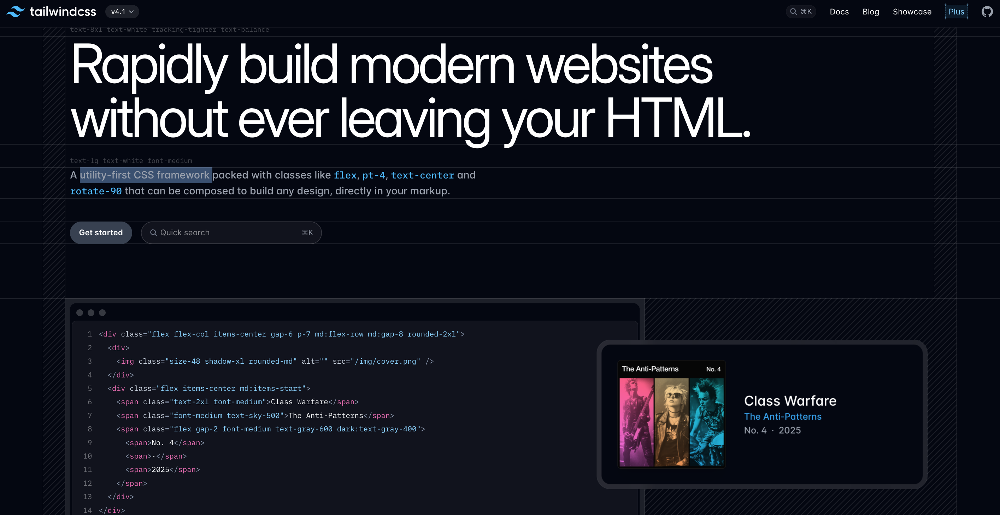

CSS Frameworks
Created: 25 Jan, 2026
“
This site uses a framework!
“
Wat is een framework?

Framework voorbeelden
TailwindCSS Tailwind CSS is een populair, utility-first CSS-framework dat ontwikkelaars in staat stelt sneller websites te bouwen door direct klassen (zoals flex, pt-4, text-center) in HTML toe te passen. Het biedt geen voorgedefinieerde componenten zoals Bootstrap, maar laag-niveau bouwstenen, wat zorgt voor unieke ontwerpen, betere consistentie en hogere ontwikkelsnelheid.
Foundation Foundation is een gratis, responsief front-end framework dat een responsief raster en HTML- en CSS-UI-componenten, sjablonen en codefragmenten biedt, waaronder typografie, formulieren, knoppen, navigatie en andere interface-elementen, evenals optionele functionaliteit die wordt geleverd door JavaScript-extensies.
